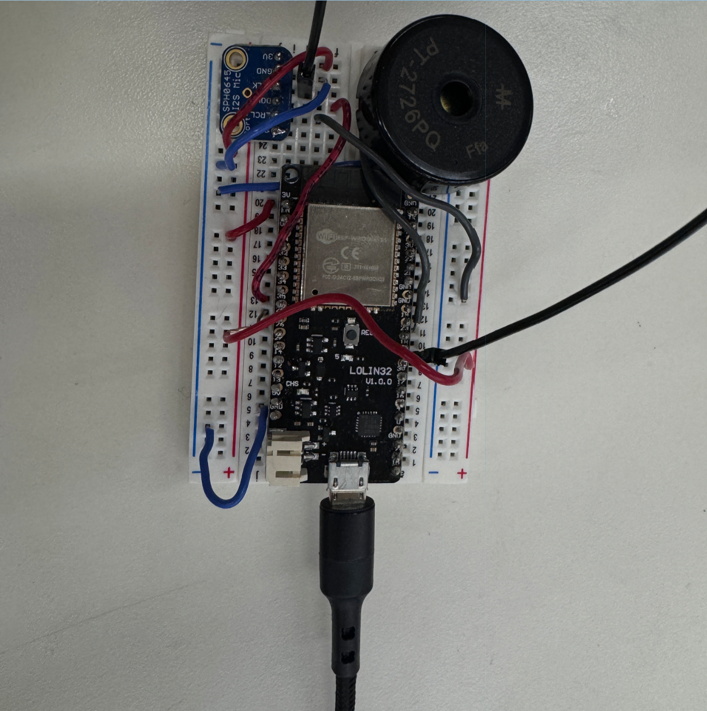

Project overview
For this project, we wanted to build something that responded to the noise level in a room. The idea came from how easy it can be to lose focus when there is too much background sound. Instead of only measuring noise, we wanted the circuit to respond by playing different sounds.
We connected a microphone sensor, buzzer, and microcontroller on a breadboard. We also set up a LAN web server so the circuit could be controlled from a local webpage. This meant the system could respond either to live microphone readings or to user input from the web interface.

How it worked
We set sound thresholds for different room conditions. A quiet room could trigger a lower beat, normal chatter could trigger a calmer song, and louder background noise could trigger a more upbeat sound.
The local webpage gave us a manual control layer, while the microphone gave the circuit an automatic sensing layer. The microcontroller handled the logic between the web request, the microphone reading, and the buzzer output.
Challenges
A lot of the project was debugging how the LAN interface, sensor input, and buzzer output interacted. At first, it seemed like once we could trigger a song from the webpage, adding microphone control would be straightforward. It turned out to be more complicated because the sensor and web controls had to work together without overriding each other.
We also ran into an interesting feedback problem: the microphone sometimes picked up the sound from the buzzer itself. That changed the sound-level reading and could make the circuit switch between different responses. It was a good lesson in how software logic, hardware wiring, and physical feedback can affect each other in unexpected ways.
Collective documentation
The full group documentation includes the circuit design, code, videos, debugging notes, and a more detailed explanation of how the LAN web server and circuit worked together.